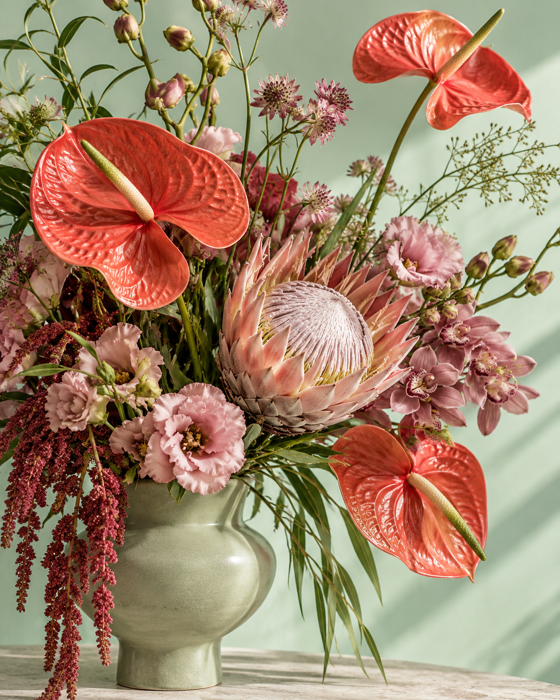

И маленьких «просто так».
ты — самое главное. спасибо за всё. просто так. скучаю. для самых близких. ты — моё вдохновение. пусть день расцветёт. для себя любимой. нежность в каждом лепестке. обнимаю цветами. маленький знак внимания. счастье без повода.
У чувств
есть оттенки.
Начните с настроения.
Цветы найдут свои слова.
Это концептуальные палитры, а не каталог в наличии. Состав, стоимость и возможность заказа уточняются в лавке.
Пауза среди цветов
У каждого
цветка есть
своя пара.
Переверните две карточки. Запомните цветы. Найдите все шесть пар — и маленький сад расцветёт. Несовпавшие карточки закроются через секунду.
Без таймера.
В вашем ритме.
Тихое утро / выразительный
Не обязательно
ждать повода.
Зайти по дороге домой. Вспомнить о близком.
Подарить цветы себе. Этого уже достаточно.
Встретимся среди цветов
Совсем
рядом.
Москва, Пресненская набережная, 4 ст1
Часы работы и наличие цветов уточняйте по телефону.
+7 926 120-24-67почти дома
Точный маршрут — в картах.
Ура букет
Давайте поговорим о цветах
Сначала —
пара слов.
Букет к важному дню, цветы для дома или маленький знак внимания. Расскажите, с чего начнём.
Демо: заявка не отправляется. Для настоящего заказа позвоните в лавку.